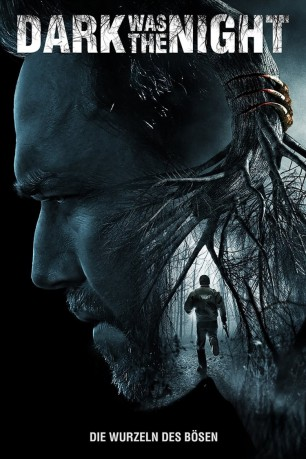

#10647 Dark was the Night
 
 IMDB-Wertung: 5.6 / 10
IMDB-Wertung: 5.6 / 10  Metascore: 40
Metascore: 40 
In dem kleinen verschlafenen Städtchen Maiden Woods kommt es so gut wie nie zu außergewöhnlichen Vorkommnissen. Dem Sheriff Paul Shields und seinem neuen, kürzlich aus New York eingetroffenen Stellvertreter Donny Saunders ist das auch nur allzu recht, denn die Beiden haben derzeit mit anderen Sorgen zu kämpfen: Shields wird von Schuldgefühlen und Geistern seiner Vergangenheit geplagt, während Saunders versucht über den Tod seines Partners hinwegzukommen. Als jedoch ein Farmer eins seiner Pferde vermisst, werden die Ordnungshüter um Hilfe gebeten. Schon bald machen sie eine Entdeckung, die ihnen Rätsel aufgibt: Der ganze Ort ist mit Hufspuren übersäht, die zwar zu einem Pferd passen, aber aufgrund des Abstands von einem Wesen auf zwei Beinen hinterlassen worden sein müssen... Ob an den gruseligen Geschichten über die Wälder von Maiden Woods und einem unheimlichen Geschöpf, das dort sein Unwesen treiben soll, etwas dran ist?
Jahr: 2014
Dauer: 98 Minuten
FSK: 16
Land: USA Studio: Image EntertainmentTonspuren: DTS - ,
Untertitel: Deutsch,
Auflösung: 1080p (1920x1080) Größe: 5908 MB
Genre: Thriller, Horror, Drama
Regisseur: Jack Heller
Drehbuch: Tyler Hisel
Soundtrack: Darren Morze
Darsteller:
 Kevin Durand als Paul Shields
Kevin Durand als Paul Shields Lukas Haas als Donny Saunders
Lukas Haas als Donny Saunders- Bianca Kajlich als Susan Shields
 Nick Damici als Earl
Nick Damici als Earl- Heath Freeman als Jim
- Ethan Khusidman als Adam Shields
- Sabina Gadecki als Clair
 Steve Agee als Foreman
Steve Agee als Foreman- Joe Pallister als Hunter #1
- Minerva Scelza als Teacher
- Seth Hendricks als Logger
- Ty Vaughn als Parishioner
- Isabelle Sitterle als Stephanie (uncredited)
- Jacob Grigolia-Rosenbaum als Creature Performer
- Billy Paterson als Ron
- Terry Fiore als Father
- Charles Parshley als Hunter #2
- Vincent Carbone als Hunter #3
- Kim St. Clair als Town Councilwoman (uncredited)
Datei: X:\2014(A-F)\Dark was the Night (2014, FSK16, 1920x1080).mkv seit 08.02.2019
Festplatte: HD 2013(I-Z)-2014(A-Z)
 Es gibt insgesamt 119 Filme in der Gruppe '2014(A-F)'
Es gibt insgesamt 119 Filme in der Gruppe '2014(A-F)'